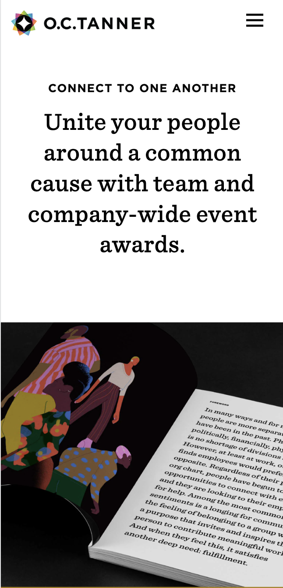
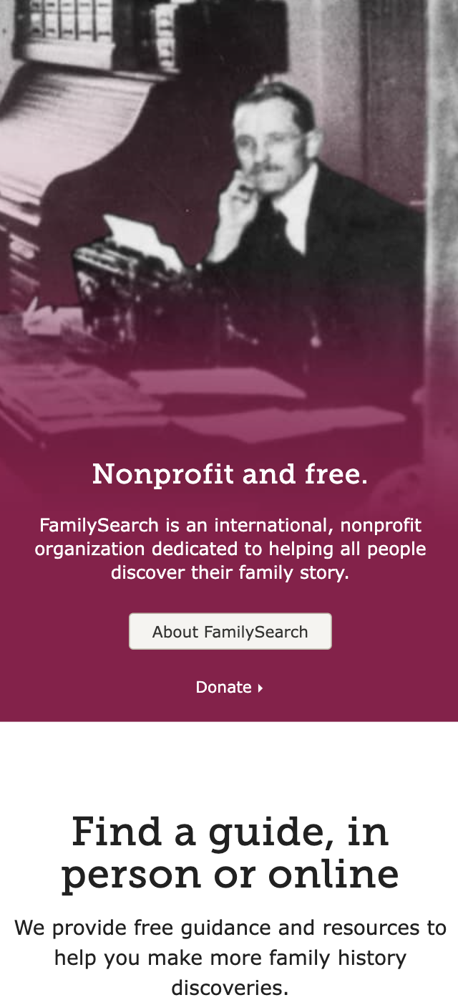
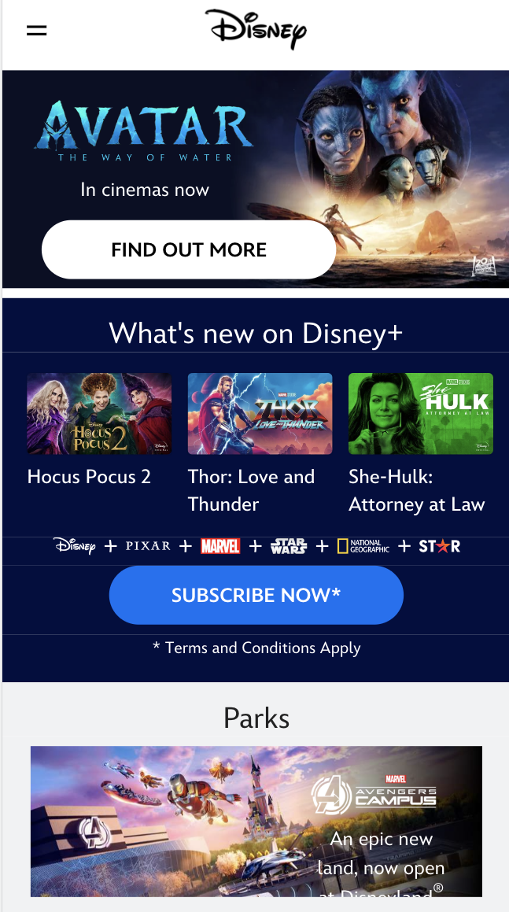

White Space and Clean Design
O.C.Tanner
o.c.tanner.com This website has good white space that makes it easy to focus on what is important. In this case, the company is promoting a product called Culture Cloud. They then give short definitions and pictues that have a lot of clean white space around the points made.
Visual Hierarchy
FamilySearch
familysearch.org This website uses visual hierarchy to great effect. The large image at the top uses white space and contrast to draw your eye to the button: Get Started.
Alignment
Disney
disney.com This website uses alignment to by aligning the items on the page. Like items, such as, disney news and hispanic and latin stories, are aligned vertically in a row that makes it easy to find.